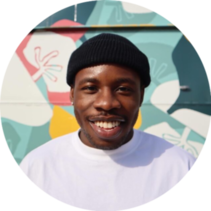

Meet New Caribbean People
Curated third space for Caribbean people who want to build real connections with others at a similar stage of life.
Get notified at launch
Curated third space for Caribbean people who want to build real connections with others at a similar stage of life.
Get notified at launch